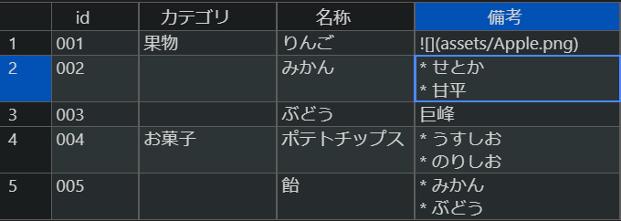

ショートコード
mdhelpテーマで使用できるショートコードの一覧です。これらはビルドされる HTML Help に対しても有効です。
ShowIf
config.tomlのshowIfsで列挙されている場合に描画する部分を指定します。以下はshowIfs = ["editionA"]とした場合に描画されるブロックです。
{{% ShowIf editionA %}}
ここにxxxをサポートする場合に表示するコンテンツを記述。
{{% /ShowIf %}}
構成も参照してください。
HideIf
config.tomlのshowIfsで列挙されている場合に描画「しない」部分を指定します。
{{% HideIf editionA %}}
ここはeditionAでは表示したくない。
{{% /HideIf %}}
構成も参照してください。
note
注記です。以下のようにnoteショートコードで囲まれた部分が注記としてレンダリングされます。
{{% note %}}
ここに注記文章を記載
{{% /note %}}
Note
ここに注記文章を記載
note (title)と言う形式で、引数にタイトルを指定することもできます。note内部にMarkdownを書くことも可能です。
{{% note 注記 %}}
ここに注記文章を記載
* markdownも記載可能
* 箇条書きレベル2
* 箇条書きレベル1
{{% /note %}}
注記
ここに注記文章を記載
- markdownも記載可能
- 箇条書きレベル2
- 箇条書きレベル1
include
高度な表をincludeする（セル結合/Markdown/幅指定/ヘッダー有無指定）
csvファイルのincludeでは、Markdownよりも高度な表を描画することができます。

{{< include
src="./rich.csv" # sourceファイルのパス
class="gray" # tableに付加するclass属性。未指定/simple/gray
markdown=true # trueにした場合表内部のMarkdownをレンダリング。初期値false
merge=true # trueにした場合空セルを上のセルで結合。初期値false
head=true # trueにした場合1行目をヘッダーとみなす。初期値true
width="90%" # tableのwidth属性を設定。
width-ratio="5%-10%-70%-15%" # tableの列幅の比率を-区切りで指定。"*"はauto。
>}}
| id | カテゴリ | 名称 | 備考 |
|---|---|---|---|
| 001 | 果物 | りんご | |
| 002 | みかん |
|
|
| 003 | ぶどう | 巨峰 | |
| 004 | お菓子 | ポテトチップス |
|
| 005 | 飴 |
|